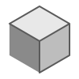

PLANTING IDEAS
A designer & builder. This is not a page you read — it's a land you travel. Begin in the golden fields where every project starts as a seed.
Creativity grows
where it's tended.
Windmills turning, canals running, hills breathing in the distance. The farmland is the craft: patient, deliberate, alive.
What I cultivate with.
- Product Design Shaping flows people feel before they notice them.
- Design Systems One language that keeps every screen in tune.
- Motion & 3D Motion with intent — depth, weight, and timing.
- Brand & Story Identity that grows with a team, never freezes.
 Figma
Figma- Sketch
- Adobe XD
 Photoshop
Photoshop Illustrator
Illustrator After Effects
After Effects- Premiere Pro
- Spline
 ChatGPT
ChatGPT Claude
Claude- Midjourney
- Firefly
- Runway
CROSSING INTO THE WILD
The cultivated fields give way to something deeper. Curiosity takes over. The forest begins.
Tractor
A field-ready companion app for tractors — machine health, maintenance schedules, and live telemetry, designed for gloves-on use under bright sun. Shaped the classic way: design-thinking workshops, then crafted in Figma.
Figma
Shatila
A 45-year-old family bakery, re-imagined as an AI-powered operations platform — eliminating 60+ hours of manual order entry so one operator can process 900 orders a day. Taken from concept to a working product entirely in Figma Make.
Figma Make
Invoice Platform
A complete financial dashboard system — React 19, MUI, real-time status flows. From tangled spreadsheets to a calm, considered product. Vibe-coded end-to-end with Claude Code and Cursor.
Claude Code

Cursor
Dayala Sankaran —
UX/UI & product designer.
Senior UX/UI & Product Designer with 5+ years shaping AI-enhanced, enterprise-grade products — user-centered research, scalable component libraries, design tokens, and intuitive flows across complex platforms.
- Track5+ years · enterprise & AI products · Chennai
-
2022 — PresentSenior UI/UX DesignerInfo Services · Chennai
AI-integrated workflows for enterprise platforms — cut task time 32% and design-to-dev iteration 40% with a tokenized Figma system.
-
2020 — 2022UI/UX DesignerMacappStudio
End-to-end UX for Speed Care — a hospital platform spanning Doctor & Patient apps and seven role-based dashboards.
-
2017 — 2018Cell Leader · LPDCSundaram-Clayton (TVS Group)
Led die-casting cell operations and daily production targets before moving into design.
Achievements,
carried downstream.
- 5+years exploring
- 40+products shipped
- ∞curiosity
LET'S EXPLORE
Have a world worth building? I'd love to help you plant it.
Start a conversation